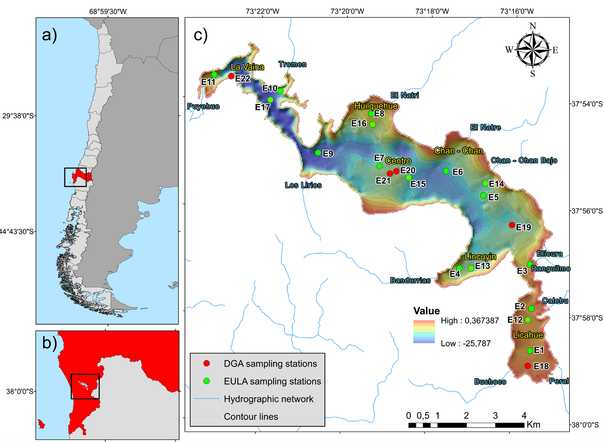
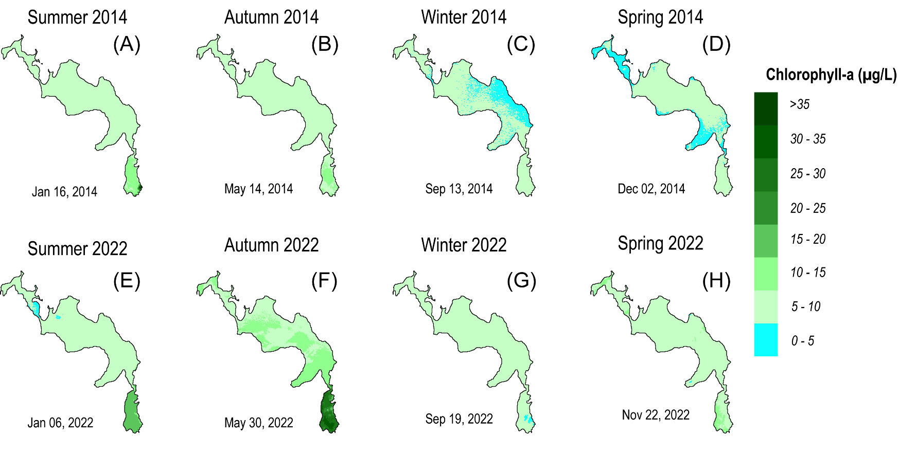

“Seasonal and interannual variability of inherent and apparent optical properties in lakes and reservoirs in south-central Chile: Implications for bio-optical modeling and water quality”
Project Managers:
Germán Velásquez - germanvelasquez@udec.cl
Santiago Yépez - syepez@udec.cl
Water quality monitoring in Chile has historically been a challenge due to the low density of measurement stations, with only 829 stations covering more than 12,000 lakes and 1,200 rivers. Traditional methods, based on sporadic in situ sampling, did not allow for continuous monitoring or early detection of problems such as eutrophication or pollution.
To address this limitation, we developed an advanced monitoring system using remote sensing technology. Through satellite images, hyperspectral spectroscopy and bio-optical models, we were able to assess and monitor water quality in four strategic lakes in south-central Chile: Laguna Grande de San Pedro de la Paz, Lago Lanalhue, Lago Villarrica and Lago Llanquihue.
How did we do it?
- In situ spectral measurements were performed with hyperspectral radiometers.
- Advanced atmospheric correction techniques were implemented.
- Key water quality parameters were analyzed.
- Regional bio-optical estimation algorithms were developed.
- A semi-automated WEB-GIS system was implemented.
Results and Applications
The project allowed for a precise characterization of eutrophication processes in the lakes studied, identifying critical zones and patterns of temporal variability. Thanks to the integration of satellite data with field measurements, a reliable database was established for the management and conservation of these aquatic ecosystems.
In addition, the developed system enables continuous and low-cost monitoring, facilitating decision-making for environmental authorities and local communities. This methodology is scalable and adaptable to other bodies of water in Chile and the world, offering an efficient solution for environmental monitoring based on remote sensing technologies.
Lanalhue Lake Study Area
(a) Map showing the location of Lake Lanalhue within the south-central region of Chile (area highlighted in red). (b) Zoomed-in view highlighting specific area within the larger region. (c) Detailed map of Lake Lanalhue, including the distribution of sampling stations, the hydrographic network and bathymetry.
Chlorophyll-a Distribution Map
Chlorophyll-a (Chl-a) distribution maps for Lake Lanalhue, showing the variation in concentration values during the summer, fall, winter, and spring seasons in the years 2014 (A–D) and 2022 (E–H).
Photographic Record of Project Lagoons
Link to Water Quality Monitoring Platform

Find out more about our platform: Water Quality Monitoring Platform